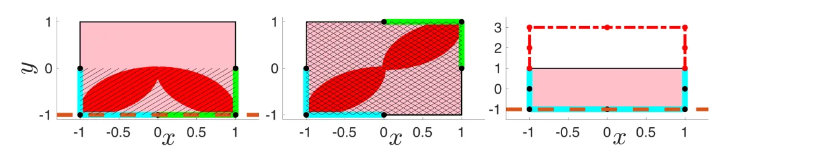
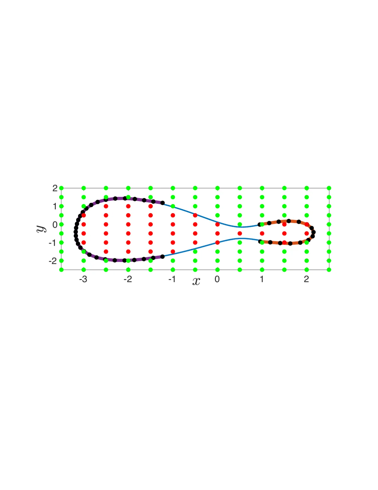
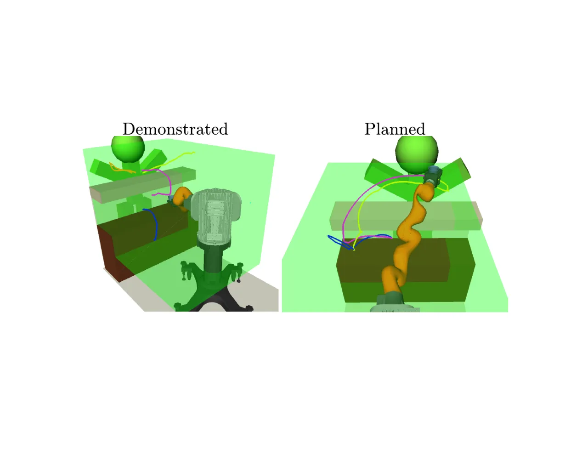
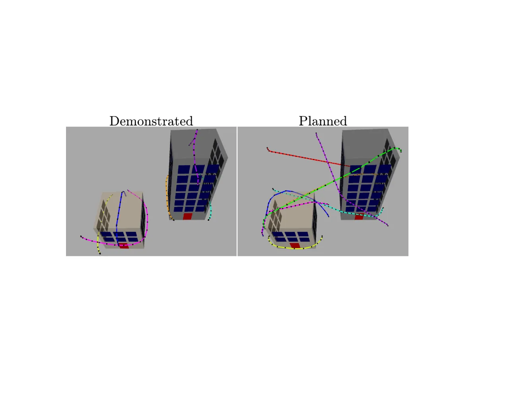
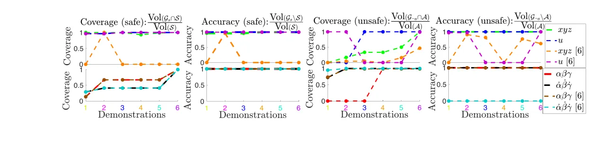

传统 IRL/IOC 学的是「成本函数」，但很多真实规划问题真正需要的是硬约束（安全集）。本文提出用演示所满足的 KKT 最优性条件 构造一个 MILP，从仅局部最优且成本函数不确定的演示中反解出参数化约束，并给出所恢复安全/不安全集的保守性理论保证。在 7-DOF 机械臂与四旋翼（约束空间高达 23 维）上验证，优于依赖采样低成本轨迹的既有方法。
从演示中学习（LfD）以往聚焦在通过 IOC/IRL 学习成本/奖励函数。但真实规划问题（如城市中飞行的四旋翼）还要求系统遵守硬约束——轨迹必须留在安全状态集内。约束比「软化」的成本惩罚更严格，更适合安全关键场景；而且约束往往跨任务共享，识别出来有助于机器人泛化。
“We consider the problem of learning parametric constraints shared across tasks from approximately locally-optimal demonstrations under parametric cost function uncertainty.”
此前工作（wafr、corl）迈出了识别约束的第一步，但有两条强假设：(1) 演示近似全局最优；(2) 演示者的成本函数被精确已知。然而人类并非总是任务专家，要求其提供近全局最优的演示不合理；且学习者也很少能精确知道被优化的成本函数。本文的核心洞见是：局部最优、满足约束的演示必然满足 KKT 条件——这是约束优化局部最优的一阶必要条件——由此绕开对全局最优与已知成本的依赖。

把每个任务写成一个约束优化问题（forward problem）：在已知动力学 xt+1=f(xt,ut,t)、已知起止约束下，最小化（可能非凸、参数 γ 未知的）成本 cΠ(ξ,γ)，同时满足未知的安全集约束 𝒮(θ)。给定若干「近似局部最优」演示，目标是反解出定义安全集 𝒮(θ)={p | g(p,θ)≤0} / 不安全集 𝒜(θ) 的参数 θ（以及可选地恢复成本参数 γ）。
局部最优演示满足 KKT 条件：primal feasibility、Lagrange 乘子非负、complementary slackness、stationarity。把约束参数 θ、成本参数 γ 与各演示的乘子 λ、ν 一起当作决策变量，求「使所有演示的 KKT 条件成立」的 θ 即为可行性问题（Problem 2）。为处理演示的次优性（近似局部最优），可将 stationarity 与 complementary slackness 松弛为目标中的 ℓ1 惩罚（Problem 3）。
“By using the KKT conditions, which implicitly define the unsafe set instead of explicitly through unsafe trajectories, our method sidesteps both the need for an exact cost function to classify the safety of sampled trajectories as well as any sampling difficulties.”
(a) Unions of offset-parameterized（如轴对齐超矩形盒）：θ 不与约束状态 p 相乘。用 big-M 公式编码「或」约束与 complementary slackness 的二值变量 q、z；由于 λ（连续）与 q（二值）的双线性项可被 McCormick 精确线性化，整个恢复问题化为一个可精确求解 θ 的 MILP（Problem 4）。
(b) Unions of affine constraints：θ 与 p 相乘，stationarity 中出现 θ、λ、q 之间的三线性项，精确求解需 MINLP。本文给出一个 MILP 松弛（Problem 6）：只在乘子非零（演示触到约束边界）时才有松弛间隙，其余无损。此时无法直接恢复 θ，但仍可通过查询判断某状态是否保证安全/不安全。
保守性（Thm 1 & 2）：当约束参数化已知时，从可行集投影提取的 𝒢s、𝒢¬s 满足 𝒢¬s⊆𝒜 且 𝒢s⊆𝒮（内近似）——因为真参数 θ* 一定在可行集内。可学习性（Thm 3）：在相同初始参数集下，局部最优可学习的不安全集是全局最优可学习集的子集（𝒢¬sloc,*⊆𝒢¬sglo,*）；成本不确定只会降低可学习性。作者指出：该定理成立于「采样到全部不安全轨迹」的极限，实际采样远不完整（尤其非线性动力学），故本文的 KKT 方法反而常学到更多。

除 2D 直觉示例外，在高维系统上评估：7-DOF Kuka iiwa 机械臂与四旋翼。Baseline 为基于「采样低成本轨迹」的既有方法 corl（并假设其成本函数精确已知）。指标为学到的 𝒢s/𝒢¬s 相对真实 𝒮/𝒜 的覆盖率（coverage）与准确率（accuracy）。所有计时在 3.1 GHz Intel Core i7 / 16 GB RAM 笔记本上记录。
7-DOF 机械臂需从吧台柜或另一调酒师处递饮品给顾客，同时满足末端位姿约束（不洒）、扫掠体不碰家具、以及对顾客的 proxemics（社交距离）约束。五条次优人类演示在 HTC Vive VR 环境中采集，优化关节空间路径长度。用 Problem 4 的次优版本恢复 15 个参数，耗时 17.2 秒；查询/体积提取每次平均 16.4 / 12.1 秒（10 次平均）。结果：本文方法恢复出 𝒢s=𝒮、𝒢¬s=𝒜；baseline 因扫掠体约束把 Problem 3 的决策变量放大 18 倍、可用轨迹样本受限，在位置约束上表现差（学不到吧台/吧柜不安全，也学不全安全集）。提取的安全体积交给 CBiRRT 规划器生成新的安全轨迹。

末端质心须落在含玻璃器皿的椭圆柱之外——一个在状态中非线性的约束。用 affine-relaxed KKT 版的查询问题，仅两条演示即恢复 𝒢s=𝒮、𝒢¬s=𝒜。将 STOMP 规划器的碰撞/约束检查替换为在线求解 Problem 5，规划出两条新轨迹（规划耗时 2、6 分钟）；每次查询平均仅 0.073 秒，且可用上次查询结果 warm-start 加速。
四旋翼携带易碎载荷穿越城市：需避开两栋建筑、满足控制/位姿/角速度约束，共 23 个未知约束参数，用 六条演示求解 Problem 4，耗时 19.4 秒。方法从单盒参数化起步，靠不可行自动检测出位置约束需要再加一个盒。演示为合成生成，方法假设成本参数不确定 γr∈[0.01, 3]，而 baseline 假设成本精确已知。查询/体积提取平均 26.6 / 43.0 秒。结论：在简单凸约束（角速度、控制）上两者相当；但 baseline 在不安全集与位置约束上因「同时辨识众多约束 + 二阶非线性动力学下采样困难」而表现差、准确率剧烈波动。提取的安全体积交给轨迹优化器（CasADi）生成新安全轨迹。


作者写道方法「require the dynamics to be known in closed form」，而 baseline 方法（wafr、corl）只需一个模拟器。计划扩展以处理不确定动力学。
“the number of decision variables in our method scales linearly with the number of demonstrations, making it important that the demonstrations are informative”——故演示必须对未知约束有信息量。作者计划开发主动学习以获取有信息量的演示。
保守性定理建立在精确局部最优上；用次优演示（Problem 3）时，成本次优与 KKT 违反之间关系一般未知，难以保证保守性。作者在 Remark 中指出实践中恢复的集合「仍趋于保守」，但这不是形式化保证。
offset 参数化在简单集数目 Nc 较大时求解未必高效（原文：“may not be efficient for large Nc”）；affine 参数化的精确恢复需 MINLP，故退而用 MILP 松弛——只能查询安全性、无法直接恢复 θ。此外可学习性依赖演示是否与约束充分交互。